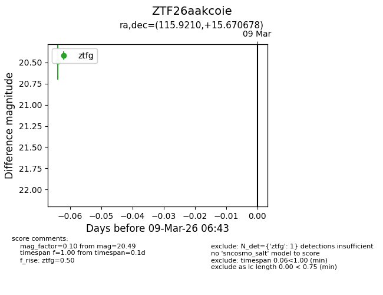
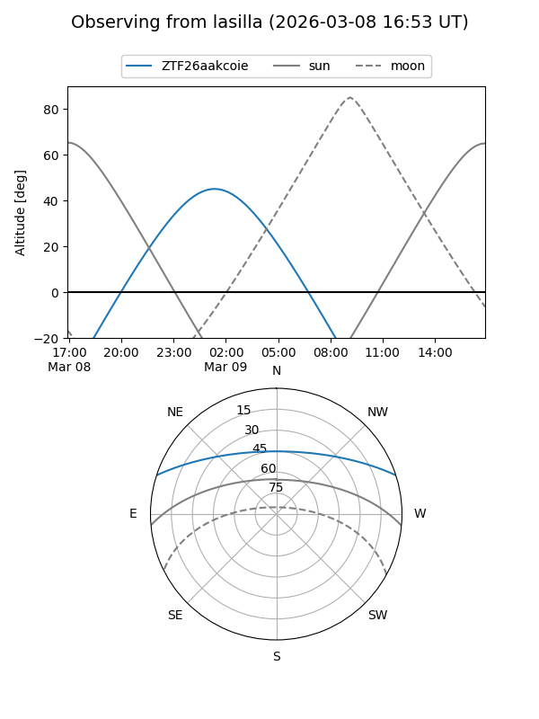
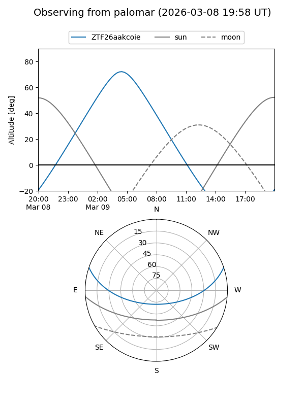
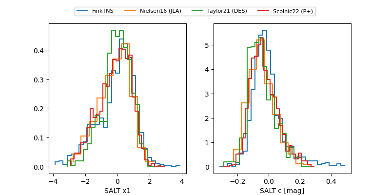

ZTF26aakcoie
Target ZTF26aakcoie at 2026-03-09 06:44
Aliases and brokers:
FINK: link
Lasair: link
ALeRCE: link
alt names
ZTF26aakcoie (ztf,fink_ztf)
Coordinates:
equatorial (ra, dec) = 115.9210,+15.67068
equatorial (HMS+DMS) = 07:43:41.04,+15:40:14.44
galactic (l, b) = (204.3722,+18.47093)
Flags:
Photometry:
last ztfg=20.49
1 ztfg detections
Lightcurve

Visibility


Additional plots
